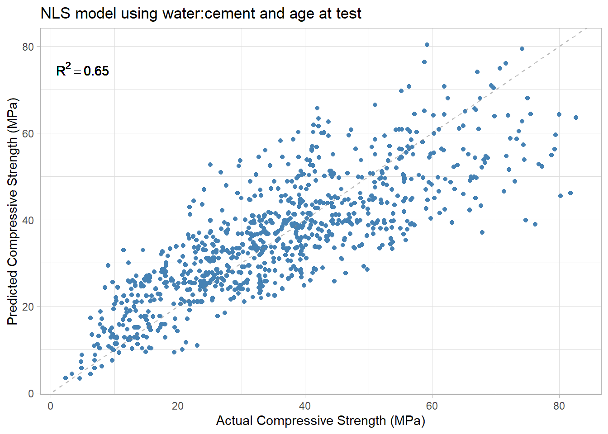
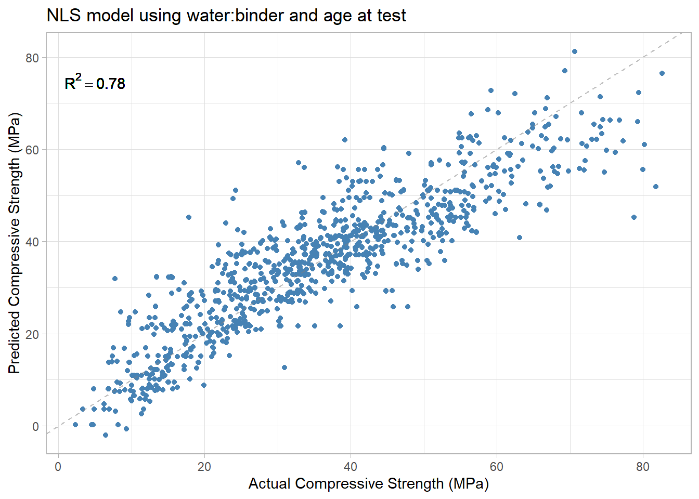

Conventional Material Models for Concrete Dataset
Posted on June 16, 2020
Abrams’ law states that the strength of a concrete mix is inversely related to the mass ratio of water to cement. In other words, as the water content increases, the strength of the concrete decreases. Experimental data however shows that this law does not provide the complete picture and concrete formulations with the same water:cement can have significantly different performance.
concrete_tbl <- concrete_tbl %>%
mutate(water_cement = water / cement,
water_binder = water / (cement + blast_furnace_slag + fly_ash))
concrete_tbl %>%
ggplot(aes(water_cement, compressive_strength)) +
geom_point(alpha = 0.15) +
geom_smooth(formula = y ~ x, method = "lm") +
theme_light() +
labs(title = "Concrete Compressive Strength vs. Water:Cement",
x = "Water:Cement", y = "Compressive Strength (MPa)")

It is apparent from the plot above that water:cement is not the only factor important for determining the compressive strength of concrete. For example, there are multiple formulations with a water:cement of ~1 with a range of compressive strengths from less than 10 MPa to greater than 50 MPa. The age of the concrete at the time of testing is also recognized as an important factor in determining the concrete strength for a sample.
\[ f^\prime_c(t) = a X^b \cdot [c \ln(t)+(d)] \]
where t = age at test, X = w/c or water-to-binder ratio and a, b, c, d are regression coefficients
The above equation also includes the age at test variable (t) to predict the compressive strength. This equation uses four parameters reminding me of the famous quote by mathematician John von Neumann, “with four parameters I can fit an elephant, with five I can make him wiggle his trunk.”
This equation is fit to the experimental dataset using non-linear least squares approximation. The nls function in base R has been used as shown below.
NLS Fit using water:cement
wc <- concrete_tbl$water_cement
wb <- concrete_tbl$water_binder
age <- concrete_tbl$age
cs <- concrete_tbl$compressive_strength
csFunc <- function(wc, age, a, b, c, d) { (a * wc^b) + (c * log(age) + d)}
Fit with water:cement
csFit <- nls(cs ~ csFunc(wc, age, a, b, c, d), start=list(a=30, b=-0.6, c=0.3, d=0.1))
summary(csFit)
##
## Formula: cs ~ csFunc(wc, age, a, b, c, d)
##
## Parameters:
## Estimate Std. Error t value Pr(>|t|)
## a 14.0112 2.9035 4.826 1.61e-06 ***
## b -1.0536 0.1357 -7.763 2.00e-14 ***
## c 8.1770 0.2587 31.608 < 2e-16 ***
## d -12.8289 3.1703 -4.047 5.59e-05 ***
## ---
## Signif. codes: 0 '***' 0.001 '**' 0.01 '*' 0.05 '.' 0.1 ' ' 1
##
## Residual standard error: 9.869 on 1026 degrees of freedom
##
## Number of iterations to convergence: 7
## Achieved convergence tolerance: 3.529e-06
Visualize actual vs. predicted compressive strength for water:cement model.

NLS Fit using Water:Binder
Fit with water:binder
csFit_wb <- nls(cs ~ csFunc(wb, age, a, b, c, d), start=list(a=10, b=-0.5, c=10, d=10))
summary(csFit_wb)
##
## Formula: cs ~ csFunc(wb, age, a, b, c, d)
##
## Parameters:
## Estimate Std. Error t value Pr(>|t|)
## a 23.5011 6.9342 3.389 0.000728 ***
## b -0.8614 0.1440 -5.980 3.07e-09 ***
## c 8.5739 0.2043 41.971 < 2e-16 ***
## d -39.2343 8.2396 -4.762 2.20e-06 ***
## ---
## Signif. codes: 0 '***' 0.001 '**' 0.01 '*' 0.05 '.' 0.1 ' ' 1
##
## Residual standard error: 7.774 on 1026 degrees of freedom
##
## Number of iterations to convergence: 7
## Achieved convergence tolerance: 2.226e-06
Visualize actual vs. predicted compressive strength for water:binder model.

The NLS model using water:binder was a better fit to the experimental data than the NLS model using water:cement. The R2 for the water:binder model was 0.78 compared to an R2 of 0.65 for the water:cement model.
LS0tDQpvdXRwdXQ6IA0KICBodG1sX2RvY3VtZW50Og0KICAgIGNvZGVfZG93bmxvYWQ6IHRydWUNCiAgICBpbmNsdWRlczoNCiAgICAgIGFmdGVyX2JvZHk6IGZvb3Rlci5odG1sDQotLS0NCjxicj4NCmBgYHtyIHNldHVwLCBpbmNsdWRlPUZBTFNFfQ0Ka25pdHI6Om9wdHNfY2h1bmskc2V0KGVjaG8gPSBUUlVFKQ0KYGBgDQoNCmBgYHtyLCBpbmNsdWRlPUZBTFNFfQ0KbGlicmFyeShrbml0cikNCmxpYnJhcnkocmVhZHhsKQ0KbGlicmFyeSh0aWR5dmVyc2UpDQoNCnRoZW1lX3NldCh0aGVtZV9saWdodCgpKQ0KYGBgDQoNCiMjICoqQ29udmVudGlvbmFsIE1hdGVyaWFsIE1vZGVscyBmb3IgQ29uY3JldGUgRGF0YXNldCoqDQoqUG9zdGVkIG9uIEp1bmUgMTYsIDIwMjAqDQoNCkFicmFtcycgbGF3IHN0YXRlcyB0aGF0IHRoZSBzdHJlbmd0aCBvZiBhIGNvbmNyZXRlIG1peCBpcyBpbnZlcnNlbHkgcmVsYXRlZCB0byB0aGUgbWFzcyByYXRpbyBvZiB3YXRlciB0byBjZW1lbnQuICBJbiBvdGhlciB3b3JkcywgYXMgdGhlIHdhdGVyIGNvbnRlbnQgaW5jcmVhc2VzLCB0aGUgc3RyZW5ndGggb2YgdGhlIGNvbmNyZXRlIGRlY3JlYXNlcy4gIEV4cGVyaW1lbnRhbCBkYXRhIGhvd2V2ZXIgc2hvd3MgdGhhdCB0aGlzIGxhdyBkb2VzIG5vdCBwcm92aWRlIHRoZSBjb21wbGV0ZSBwaWN0dXJlIGFuZCBjb25jcmV0ZSBmb3JtdWxhdGlvbnMgd2l0aCB0aGUgc2FtZSB3YXRlcjpjZW1lbnQgY2FuIGhhdmUgc2lnbmlmaWNhbnRseSBkaWZmZXJlbnQgcGVyZm9ybWFuY2UuDQoNCmBgYHtyLCBpbmNsdWRlPUZBTFNFfQ0KZmlsZW5hbWUgPC0gIkNvbmNyZXRlX0RhdGEueGxzIg0KDQpmb2xkZXIgPC0gIi4vZGF0YS8iDQpudW1iZXJDb2xzIDwtIDkgI3RvdGFsIG51bWJlciBvZiBjb2x1bW5zIGluIHNwcmVhZHNoZWV0DQoNCmNvbFR5cGVzIDwtIHJlcCgibnVtZXJpYyIsIG51bWJlckNvbHMpDQpjb25jcmV0ZV90YmwgPC0gcmVhZF9leGNlbChwYXRoID0gcGFzdGUwKGZvbGRlciwgZmlsZW5hbWUpLCBjb2xfdHlwZXMgPSBjb2xUeXBlcykNCg0KY29uY3JldGVfdGJsIDwtIGNvbmNyZXRlX3RibCAlPiUNCiAgcmVuYW1lKGNlbWVudCA9IHN0YXJ0c193aXRoKCJDZW1lbnQiKSkgJT4lDQogIHJlbmFtZShibGFzdF9mdXJuYWNlX3NsYWcgPSBzdGFydHNfd2l0aCgiQmxhc3QiKSkgJT4lDQogIHJlbmFtZShmbHlfYXNoID0gc3RhcnRzX3dpdGgoIkZseSBBc2giKSkgJT4lDQogIHJlbmFtZSh3YXRlciA9IHN0YXJ0c193aXRoKCJXYXRlciIpKSAlPiUNCiAgcmVuYW1lKHN1cGVycGxhc3RpY2l6ZXIgPSBzdGFydHNfd2l0aCgiU3VwZXIiKSkgJT4lDQogIHJlbmFtZShjb2Fyc2VfYWdncmVnYXRlID0gc3RhcnRzX3dpdGgoIkNvYXJzZSIpKSAlPiUNCiAgcmVuYW1lKGZpbmVfYWdncmVnYXRlID0gc3RhcnRzX3dpdGgoIkZpbmUiKSkgJT4lDQogIHJlbmFtZShhZ2UgPSBzdGFydHNfd2l0aCgiQWdlIikpICU+JQ0KICByZW5hbWUoY29tcHJlc3NpdmVfc3RyZW5ndGggPSBzdGFydHNfd2l0aCgiQ29uY3JldGUiKSkNCmBgYA0KDQpgYGB7cn0NCmNvbmNyZXRlX3RibCA8LSBjb25jcmV0ZV90YmwgJT4lDQogIG11dGF0ZSh3YXRlcl9jZW1lbnQgPSB3YXRlciAvIGNlbWVudCwNCiAgICAgICAgIHdhdGVyX2JpbmRlciA9IHdhdGVyIC8gKGNlbWVudCArIGJsYXN0X2Z1cm5hY2Vfc2xhZyArIGZseV9hc2gpKQ0KDQpjb25jcmV0ZV90YmwgJT4lDQogIGdncGxvdChhZXMod2F0ZXJfY2VtZW50LCBjb21wcmVzc2l2ZV9zdHJlbmd0aCkpICsNCiAgZ2VvbV9wb2ludChhbHBoYSA9IDAuMTUpICsNCiAgZ2VvbV9zbW9vdGgoZm9ybXVsYSA9IHkgfiB4LCBtZXRob2QgPSAibG0iKSArDQogIHRoZW1lX2xpZ2h0KCkgKw0KICBsYWJzKHRpdGxlID0gIkNvbmNyZXRlIENvbXByZXNzaXZlIFN0cmVuZ3RoIHZzLiBXYXRlcjpDZW1lbnQiLA0KICAgICAgIHggPSAiV2F0ZXI6Q2VtZW50IiwgeSA9ICJDb21wcmVzc2l2ZSBTdHJlbmd0aCAoTVBhKSIpDQpgYGANCg0KSXQgaXMgYXBwYXJlbnQgZnJvbSB0aGUgcGxvdCBhYm92ZSB0aGF0IHdhdGVyOmNlbWVudCBpcyBub3QgdGhlIG9ubHkgZmFjdG9yIGltcG9ydGFudCBmb3IgZGV0ZXJtaW5pbmcgdGhlIGNvbXByZXNzaXZlIHN0cmVuZ3RoIG9mIGNvbmNyZXRlLiAgRm9yIGV4YW1wbGUsIHRoZXJlIGFyZSBtdWx0aXBsZSBmb3JtdWxhdGlvbnMgd2l0aCBhIHdhdGVyOmNlbWVudCBvZiB+MSB3aXRoIGEgcmFuZ2Ugb2YgY29tcHJlc3NpdmUgc3RyZW5ndGhzIGZyb20gbGVzcyB0aGFuIDEwIE1QYSB0byBncmVhdGVyIHRoYW4gNTAgTVBhLiAgVGhlIGFnZSBvZiB0aGUgY29uY3JldGUgYXQgdGhlIHRpbWUgb2YgdGVzdGluZyBpcyBhbHNvIHJlY29nbml6ZWQgYXMgYW4gaW1wb3J0YW50IGZhY3RvciBpbiBkZXRlcm1pbmluZyB0aGUgY29uY3JldGUgc3RyZW5ndGggZm9yIGEgc2FtcGxlLg0KDQokJCBmXlxwcmltZV9jKHQpID0gYSBYXmIgXGNkb3QgW2MgXGxuKHQpKyhkKV0gJCQNCg0Kd2hlcmUgdCA9IGFnZSBhdCB0ZXN0LCBYID0gdy9jIG9yIHdhdGVyLXRvLWJpbmRlciByYXRpbyBhbmQgYSwgYiwgYywgZCBhcmUgcmVncmVzc2lvbiBjb2VmZmljaWVudHMNCg0KVGhlIGFib3ZlIGVxdWF0aW9uIGFsc28gaW5jbHVkZXMgdGhlIGFnZSBhdCB0ZXN0IHZhcmlhYmxlICh0KSB0byBwcmVkaWN0IHRoZSBjb21wcmVzc2l2ZSBzdHJlbmd0aC4gIFRoaXMgZXF1YXRpb24gdXNlcyBmb3VyIHBhcmFtZXRlcnMgcmVtaW5kaW5nIG1lIG9mIHRoZSBmYW1vdXMgcXVvdGUgYnkgbWF0aGVtYXRpY2lhbiBKb2huIHZvbiBOZXVtYW5uLCAid2l0aCBmb3VyIHBhcmFtZXRlcnMgSSBjYW4gZml0IGFuIGVsZXBoYW50LCB3aXRoIGZpdmUgSSBjYW4gbWFrZSBoaW0gd2lnZ2xlIGhpcyB0cnVuay4iDQoNClRoaXMgZXF1YXRpb24gaXMgZml0IHRvIHRoZSBleHBlcmltZW50YWwgZGF0YXNldCB1c2luZyBub24tbGluZWFyIGxlYXN0IHNxdWFyZXMgYXBwcm94aW1hdGlvbi4gIFRoZSBubHMgZnVuY3Rpb24gaW4gYmFzZSBSIGhhcyBiZWVuIHVzZWQgYXMgc2hvd24gYmVsb3cuDQoNCiMjIyBOTFMgRml0IHVzaW5nIHdhdGVyOmNlbWVudA0KYGBge3J9DQp3YyA8LSBjb25jcmV0ZV90Ymwkd2F0ZXJfY2VtZW50DQp3YiA8LSBjb25jcmV0ZV90Ymwkd2F0ZXJfYmluZGVyDQphZ2UgPC0gY29uY3JldGVfdGJsJGFnZQ0KY3MgPC0gY29uY3JldGVfdGJsJGNvbXByZXNzaXZlX3N0cmVuZ3RoDQoNCmNzRnVuYyA8LSBmdW5jdGlvbih3YywgYWdlLCBhLCBiLCBjLCBkKSB7IChhICogd2NeYikgKyAoYyAqIGxvZyhhZ2UpICsgZCl9DQpgYGANCg0KRml0IHdpdGggd2F0ZXI6Y2VtZW50DQpgYGB7cn0NCmNzRml0IDwtIG5scyhjcyB+IGNzRnVuYyh3YywgYWdlLCBhLCBiLCBjLCBkKSwgc3RhcnQ9bGlzdChhPTMwLCBiPS0wLjYsIGM9MC4zLCBkPTAuMSkpDQoNCnN1bW1hcnkoY3NGaXQpDQpgYGANClZpc3VhbGl6ZSBhY3R1YWwgdnMuIHByZWRpY3RlZCBjb21wcmVzc2l2ZSBzdHJlbmd0aCBmb3Igd2F0ZXI6Y2VtZW50IG1vZGVsLiAgDQpgYGB7ciwgZWNobyA9IEZBTFNFfQ0KY29uY3JldGVfdGJsIDwtIGNvbmNyZXRlX3RibCAlPiUNCiAgbXV0YXRlKG5sc193YyA9IHByZWRpY3QoY3NGaXQpKSANCg0KY29uY3JldGVfdGJsICU+JQ0KICBnZ3Bsb3QoYWVzKHg9Y29tcHJlc3NpdmVfc3RyZW5ndGgsIHk9bmxzX3djKSkgKw0KICBnZW9tX3BvaW50KGNvbG9yID0gInN0ZWVsYmx1ZSIpICsNCiAgZ2VvbV9hYmxpbmUoc2xvcGUgPSAxLCBsdHkgPSAyLCBjb2xvciA9ICJncmF5NTAiLCBhbHBoYSA9IDAuNSkgKw0KICBsYWJzKHRpdGxlPSJOTFMgbW9kZWwgdXNpbmcgd2F0ZXI6Y2VtZW50IGFuZCBhZ2UgYXQgdGVzdCIsDQogICAgICAgeCA9ICJBY3R1YWwgQ29tcHJlc3NpdmUgU3RyZW5ndGggKE1QYSkiLA0KICAgICAgIHkgPSAiUHJlZGljdGVkIENvbXByZXNzaXZlIFN0cmVuZ3RoIChNUGEpIikgKw0KICBnZW9tX3RleHQoeCA9IDUsIHkgPSA3NSwgbGFiZWwgPSBwYXN0ZSgiUl4yID09ICIsIA0KICAgICAgICAgICAgcm91bmQoY29yKGNvbmNyZXRlX3RibCRjb21wcmVzc2l2ZV9zdHJlbmd0aCwgY29uY3JldGVfdGJsJG5sc193YyleMiwgMikpLCBwYXJzZSA9IFRSVUUpDQpgYGANCg0KIyMjIE5MUyBGaXQgdXNpbmcgV2F0ZXI6QmluZGVyDQoNCkZpdCB3aXRoIHdhdGVyOmJpbmRlcg0KYGBge3J9DQpjc0ZpdF93YiA8LSBubHMoY3MgfiBjc0Z1bmMod2IsIGFnZSwgYSwgYiwgYywgZCksIHN0YXJ0PWxpc3QoYT0xMCwgYj0tMC41LCBjPTEwLCBkPTEwKSkNCg0Kc3VtbWFyeShjc0ZpdF93YikNCmBgYA0KVmlzdWFsaXplIGFjdHVhbCB2cy4gcHJlZGljdGVkIGNvbXByZXNzaXZlIHN0cmVuZ3RoIGZvciB3YXRlcjpiaW5kZXIgbW9kZWwuICANCmBgYHtyLCBlY2hvID0gRkFMU0V9DQpjb25jcmV0ZV90YmwgPC0gY29uY3JldGVfdGJsICU+JQ0KICBtdXRhdGUobmxzX3diID0gcHJlZGljdChjc0ZpdF93YikpIA0KDQpjb25jcmV0ZV90YmwgJT4lDQogIGdncGxvdChhZXMoeD1jb21wcmVzc2l2ZV9zdHJlbmd0aCwgeT1ubHNfd2IpKSArDQogIGdlb21fcG9pbnQoY29sb3IgPSAic3RlZWxibHVlIikgKw0KICBnZW9tX2FibGluZShzbG9wZSA9IDEsIGx0eSA9IDIsIGNvbG9yID0gImdyYXk1MCIsIGFscGhhID0gMC41KSArDQogIGxhYnModGl0bGU9Ik5MUyBtb2RlbCB1c2luZyB3YXRlcjpiaW5kZXIgYW5kIGFnZSBhdCB0ZXN0IiwNCiAgICAgICB4ID0gIkFjdHVhbCBDb21wcmVzc2l2ZSBTdHJlbmd0aCAoTVBhKSIsDQogICAgICAgeSA9ICJQcmVkaWN0ZWQgQ29tcHJlc3NpdmUgU3RyZW5ndGggKE1QYSkiKSArDQogIGdlb21fdGV4dCh4ID0gNSwgeSA9IDc1LCBsYWJlbCA9IHBhc3RlKCJSXjIgPT0gIiwgDQogICAgICAgICAgICByb3VuZChjb3IoY29uY3JldGVfdGJsJGNvbXByZXNzaXZlX3N0cmVuZ3RoLCBjb25jcmV0ZV90YmwkbmxzX3diKV4yLCAyKSksIHBhcnNlID0gVFJVRSkNCmBgYA0KDQpUaGUgTkxTIG1vZGVsIHVzaW5nIHdhdGVyOmJpbmRlciB3YXMgYSBiZXR0ZXIgZml0IHRvIHRoZSBleHBlcmltZW50YWwgZGF0YSB0aGFuIHRoZSBOTFMgbW9kZWwgdXNpbmcgd2F0ZXI6Y2VtZW50LiAgVGhlIFJeMl4gZm9yIHRoZSB3YXRlcjpiaW5kZXIgbW9kZWwgd2FzIDAuNzggY29tcGFyZWQgdG8gYW4gUl4yXiBvZiAwLjY1IGZvciB0aGUgd2F0ZXI6Y2VtZW50IG1vZGVsLg0KDQpgYGB7ciwgaW5jbHVkZSA9IEZBTFNFfQ0KI21hbnVhbGx5IGNhbGN1bGF0ZSB0aGUgbWV0cmljcw0KIyB0cmliYmxlKA0KIyAgIH4ubWV0cmljLCB+LmVzdGltYXRvciwgfi5lc3RpbWF0ZSwNCiMgICAicm1zZSIsICAgICJzdGFuZGFyZCIsICBzcXJ0KG1lYW4oKGNvbmNyZXRlX3RibCRjb21wcmVzc2l2ZV9zdHJlbmd0aCAtIGNvbmNyZXRlX3RibCRubHNfd2IpXjIpKSwNCiMgICAicnNxIiwgICAgICJzdGFuZGFyZCIsICBjb3IoY29uY3JldGVfdGJsJGNvbXByZXNzaXZlX3N0cmVuZ3RoLCBjb25jcmV0ZV90YmwkbmxzX3diKV4yLA0KIyAgICJtYWUiLCAgICAgInN0YW5kYXJkIiwgIG1lYW4oYWJzKGNvbmNyZXRlX3RibCRjb21wcmVzc2l2ZV9zdHJlbmd0aCAtIGNvbmNyZXRlX3RibCRubHNfd2IpKQ0KIyApICU+JSBtdXRhdGUobW9kZWwgPSAibmxzIikgJT4lIHNhdmVSRFMoZmlsZSA9ICJyZXN1bHRzL2NvbmNyZXRlX25sc19tZXRyaWNzLnJkcyIpDQoNCiNjc0ZpdF93YiAlPiUgc2F2ZVJEUyhmaWxlID0gInJlc3VsdHMvY29uY3JldGVfbmxzX21vZGVsLnJkcyIpDQpgYGANCg0K